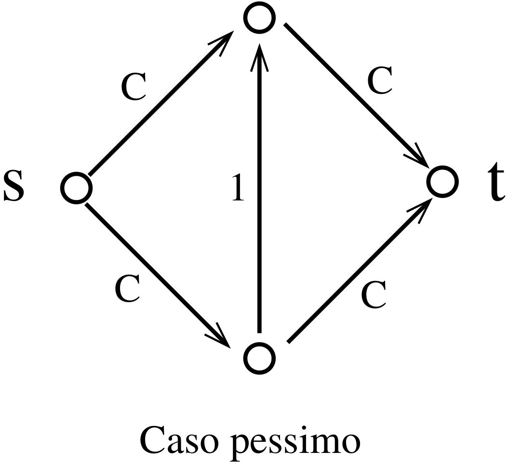

Ramo dell’Informatica Teorica focalizzato sulla classificazione dei problemi computazionali in funzione della loro inerente difficoltà, ovvero delle risorse necessarie alla loro risoluzione.
Richiede una definizione precisa di un modello di calcolo che permetta la quantificazione delle risorse (ad esempio tempo e spazio) necessarie alla computazione.
Notazioni Utilizzate
\(bin(n)\) per la rappresentazione binaria del naturale \(n\)
\(O(f)\) è la classe delle funzioni che crescono al più come \(f\),
\(o(f)\) è la classe delle funzioni che crescono meno rapidamente di \(f\),
\(\Omega(f)\) è la classe delle funzioni che crescono almeno quanto\(f\),
\(\Theta(f)\) è la classe delle funzioni che crescono esattamente come\(f\).
Grafi - Definizioni
Un grafo finito è una coppia \((V, E)\) dove:
\(V\) è un insieme finito di vertici,
\(E \subseteq (V \times V)\) è una relazione che definisce l’insieme degli archi.
Un grafo si dice non orientato quando la relazione \(E\) è simmetrica e irriflessiva.
Sia \(G = (V, E)\) un grafo:
due vertici \(u, v \in V\) sono adiacenti se esiste un arco \((u, v) \in E\).
un cammino è una sequenza di vertici dove tutte le coppie di vertici consecutivi sono adiacenti.
un cammino è semplice se tutti i vertici sono distinti.
un ciclo è un cammino semplice il cui ultimo vertice è adiacente al primo.
un cammino (o un ciclo) Hamiltoniano in \(G\) è un cammino (o un ciclo) che comprende tutti i vertici del grafo.
Esempio di cammino Hamiltoniano
un ricoprimento di vertici per \(G\) è un sottoinsieme \(V_0 \subseteq V\) tale che ogni arco \(e \in E\) ha almeno una estremità in \(V_0\).
Esempio di ricoprimento di vertici
Si noti che \(V\) è un caso degenere di ricoprimento. Inoltre se \(R\) è un ricoprimento, ogni suo soprainsieme lo è. Siamo interessati a trovare ricoprimenti minimi.
\(G\) è \(n\)-colorabile, se esiste una funzione di colorazione \(col \colon V \rightarrow c_1 , \dots , c_n\) tale che vertici adiacenti hanno colori diversi, ovvero:
\[(u, v) \in E \rightarrow col(u) \not = col(v )\]
\(G\) è completo se ogni coppia di nodi distinti è connessa da un arco.
una cricca (clique) di \(G\) è un suo sottografo completo\(G' = (V', E')\), ovvero \(V' \subseteq V\) ed \(E' = V' \times V' \subseteq E\).
Esempio di cricca di un grafo
Per ogni \(v \in V\), \(\{v\}\) è un caso degenere di cricca (come anche l’insieme vuoto). Ogni coppia di nodi \(\{u, v\}\) connessi da un arco forma una cricca.Ogni sottoinsieme di una cricca è ancora una cricca. Siamo interessati a trovare cricche massime.
un insieme indipendente in \(G\) è un sottoinsieme di vertici \(V' \subseteq V\) tale che per ogni coppia di vertici \(u, v \in V' \rightarrow (u, v) \not \in E\).
Esempio di insieme indipendente
Per ogni \(v \in V\), \(\{v\}\) è un caso degenere di insieme indipendente (come anche l’insieme vuoto). Ogni sottoinsieme di un insieme indipendente è ancora indipendente. Siamo interessati a trovare insiemi indipendenti massimi.
Flusso massimo
Una rete \(N\) è un grafo orientato con una sorgente \(s\), un pozzo \(t\), e una capacità \(c(u, v)\) associata ad ogni arco.
Esempio di problema di flusso
Un flusso in \(N\) è una funzione \(f(u, v)\) che ad ogni arco \((u, v)\) associa un intero positivo tale che:
\(f(u, v) \le c(u, v)\)
la somma dei flussi entranti in ogni nodo (a parte \(s\) e \(t\)) deve essere uguale alla somma dei flussi uscenti.
Il problema consiste nel determinare il flusso massimo dalla sorgente al pozzo.
Algoritmo
Si parte con un flusso maxf inizialmente nullo.
Si cerca un cammino da \(s\) a \(t\) nella rete \(N\) e si considera il flusso \(f\) lungo tale cammino determinato dalla capacità massima dei sui archi; se tale cammino non esiste si restituisce maxf.
Si pone maxf\(\coloneqq\)maxf $ + f; N N f$ e si ripete dal passo 2.
Complessità MF
Osserviamo innanzitutto che se \(C\) è la massima capacità degli archi, il flusso massimo è sicuramente inferiore a \(nC\) in quanto ci sono meno di \(n\) archi che partono dalla sorgente.
la ricerca del cammino costa \(O(n^2)\) il flusso aumenta ad ogni iterazione del ciclo; dunque viene ripetuto al più \(nC\) volte.
In conclusione, la complessità è \(O(n^3C)\).
L’algoritmo del flusso massimo dipende in modo lineare da \(C\), e dunque potrebbe dipendere in modo esponenziale dalla descrizione della capacità degli archi della rete.
Esempio di caso pessimo per il problema di flusso
È possibile ovviare al problema selezionando ad ogni iterazione il cammino più corto da \(s\) a \(t\). Questo fa si che un arco risulterà essere un collo di bottiglia (arco su di un cammino da \(s\) a \(t\) con capacità minima) in un numero limitato di casi, permettendo di maggiorare il numero di iterazioni con \(n^3\). Dunque la complessità dell’algoritmo è \(O(n^5)\).
NB 1: La distanza di un nodo \(u\) da \(s\) non può decrementare passando da \(N\) a \(N \setminus f\): \(d_{N \setminus f}(u) \ge d_{N}(u)\).
NB 2: Se l’arco \((u, v)\) è il collo di bottiglia del flusso \(f\) allora se \((u, v)\) verrà mai attraversato nuovamente da un flusso successivo \(f'\) (necessariamente nella direzione opposta) la distanza \(d_{N'}(u)\) di \(u\) da \(s\) sarà aumentata.
Infatti, \(d_{N'}(u) \gt d_{N'}(v ) \ge d_N(v)\); se \(d_{N'}(u) = d_{N}(u)\) avremmo \(d_{N}(u) \gt d_{N}(v)\) contraddicendo la minimalità di \(f\).
Esempio di collo di bottiglia per il problema di flusso
Le distanze sono maggiorate dal numero dei nodi, dunque ogni ogni arco può essere un collo di bottiglia al più \(n\) volte, e il numero dei flussi è al più \(O(n \cdot |E|) \le O(n^3)\).
Problemi decisionali
La 2-colorazione e la raggiungibilità sono esempi di problemi di decisione, cioè problemi che richiedono una risposta booleana (definiscono dunque un linguaggio).
Il problema del flusso massimo è un tipico esempio di problema di ottimizzazione, cioè un problema che richiede la scelta della migliore soluzione tra un insieme di risposte ammissibili rispetto ad una data funzione di costo.
È possibile fornire una versione decisionale di un problema di ottimizzazione, semplicemente chiedendo se esiste una soluzione non peggiore di un valore prefissato. Spesso i due problemi hanno complessità comparabili (è possibile determinare la complessità dell’uno in funzione dell’altro).
Matching bipartito
Un grafo bipartito è una tripla \(B = (U, V , E)\) dove \(U\) e \(V\) sono due insiemi di nodi di uguale cardinalità e \(E \subseteq U \times V\) è un insieme di archi.
Un matching è un insieme \(M \subseteq E\) che associa ad ogni elemento in \(U\) uno e un solo elemento in \(V\).
Esempio di matching bipartito
Il problema consiste nel determinare l’esistenza o meno di un matching.
Riduzione ad un problema noto
Riduciamo il problema ad un problema di flusso, orientando gli archi da \(U\) a \(V\), aggiungendo una sorgente \(s\), un pozzo \(t\), un arco \((s, u)\), \(\forall u \in U\) e un arco \((v, t)\), \(\forall v \in V\). Tutti gli archi hanno capacità unitaria.
È facile vedere che il grafo bipartito ammette un matching se e solo se la rete così ottenuta ammette un flusso di entità \(n\), dove \(n = |U| = |V|\).
Esempio di un matching bipartito ad un problema di flusso
Poichè la rete può essere costruita in tempo lineare nella dimensione del grafo, il problema del matching in un grafo bipartito è \(O(n^3)\) (si conoscono soluzioni migliori).
Insieme indipendente, ricoprimento e cricca
Dato un grafo \(G = (V , E)\) e un intero \(k\) determinare se:
esiste un insieme indipendente\(V' \subseteq V\) tale che \(k \le |V'|\);
esiste un ricoprimento\(V' \subseteq V\) tale che \(|V'| \le k\);
esiste una cricca\(V' \subseteq V\) tale che \(k \le |V'|\);
Questi tre problemi sono riducibili l’uno all’altro. Ricordiamo le definizioni:
un insieme \(V' \subseteq V\) è detto indipendente se
\[\forall u, v \in V' \rightarrow (u, v ) \not \in E\]
un sottoinsieme \(V' \subseteq V\) è detto ricoprimento se
\[\forall (u, v) \in E, u \in V' \lor v \in V'\]
una cricca di \(G\) è un sottoinsieme completo \(V' \subseteq V\), tale cioè che
\[\forall u, v \in V' \rightarrow (u, v) \in E\]
È facile vedere che:
\(V' \subseteq V\) è indipendente se e solo se \(V \setminus V'\) è un ricoprimento;
\(V' \subseteq V\) è indipendente se e solo se \(V'\) è una cricca nel grafo \(G' = (V, \overline{E})\)
Ricerca vs. Verifica
Cercare in modo esaustivo un insieme indipendente (un ricoprimento, o una cricca) di cardinalità \(k\) richiede l’esame di un numero di casi pari a \[\frac{n!}{k!(n - k)!}\]
Per valori di \(k \approx \frac{n}{2}\) questa quantità cresce in modo esponenziale in \(k\).
Non è noto se sia possibile avere algoritmi polinomiali per risolvere questi problemi (di ricerca).
Al contrario, verificare se un sottoinsieme dato di vertici è indipendente (un ricoprimento, o una cricca) richiede un tempo polinomiale nel numero dei vertici.
I problemi che ammettono soluzioni polinomiali nella dimensione dell’input e algoritmi polinomiali di verifica della correttezza di tali soluzioni sono detti problemi NP.
Soddisfacibilità
Data una formula proposizionale, determinare (cercare) se è soddisfacibile, cioè se esiste una attribuzione di valori di verità alle variabili proposizionali (funzione di valutazione) che rende vera la formula.
Esempio:
\((P \rightarrow Q) \land \lnot P \land Q\) è soddisfacibile\((P = 0, Q = 1)\)
\((Q \rightarrow P) \land \lnot P \land Q\) è insoddisfacibile
Il numero totale di funzioni di valutazione è \(2^n\) (e quindi esponenziale) dove \(n\) è il numero di variabili proposizionali nella formula.
Esistono procedimenti migliori (e.g. risoluzione), ma non si conoscono algoritmi polinomiali.
Verificare che una data funzione di valutazione rende vera la formula ha un costo lineare nella dimensione della formula.
Commesso viaggiatore
Sono date \(n\) città e una distanza intera \(d_{ij} = d_{ji} \gt 0\) tra ciascuna esse. Il problema consiste nel determinare il ciclo di lunghezza minima, ovvero una permutazione \(\pi\) tale che la quantità
La versione decisionale consite nel determinare se esiste un ciclo di lunghezza inferiore o uguale ad una distanza data \(d\).
Il numero complessivo delle permutazioni è \(\frac{(n-1)!}{2}\). È possibile migliorare il bound (ad un “semplice” esponenziale) con tecniche di programmazione dinamica, ma non si conoscono algoritmi polinomiali.
D’altra parte, verificare che un dato cammino \(\pi\) ha una lunghezza \(d_{\pi} \le d\) richiede un tempo lineare in \(n\).
Knapsak
Dato uno zaino di volume \(V\) e \(n\) oggetti \(O = \{1,\dots, n\}\) ciascuno con un volume \(v(i)\) (con \(V\) , \(v_i\) interi positivi), determinare se esiste un sottoinsieme \(I \subseteq O\) tale che
\[V = \sum\limits_{i \in I} v(i)\]
Ad esempio, dati 7 oggetti di volume \(\{6, 7, 8, 9, 10, 11, 13\}\) è possibile riempire uno zaino di dimensione \(V = 52\)?
Una ricerca esaustiva impone di considerare tutti i sottoinsiemi, ovvero \(2^n\) (e.g. esponenziale) casi.
Anche in questo caso, verificare che un dato sottoinsieme rispetta la condizione voluta richiede un costo al più lineare nel numero degli oggetti.
Riassumendo
La classe \(P\) è la classe dei problemi che ammettono un algoritmo rapido di ricerca della soluzione
La classe \(NP\) è la classe dei problemi che ammettono un algoritmo rapido di verifica della correttezza soluzione
Classi deterministiche di complessità
La Macchina di Turing
Hardware
nastri di memoria illimitati, divisi in celle di dimensione fissata. Ogni cella può contenere un carattere di un alfabeto dato, compreso un carattere \(b\) (bianco) di inizializzazione.
una testina di lettura mobile per ogni nastro.
un automa di controllo a stati finiti.
Esempio di macchina di Turing
Operazioni elementari
leggere e scrivere il carattere individuato dalla testina (il nastro di input è di sola lettura, quello di output di sola scrittura)
spostare la testina di una posizione verso destra o verso sinistra sul nastro di lavoro (sui nastri di input/output la testina può solo muoversi verso destra)
modificare lo stato interno dell’automa
Definizione formale
Una Macchina di Turing (multi-tape, deterministica) è una tupla \(\langle Q, \Gamma, b, \Sigma, k, \delta, q_{0}, F\rangle\) dove:
\(Q\) è un insieme finito di stati
\(\Gamma\) è l’ alfabeto finito del nastro
\(b \in \Gamma\) è il carattere bianco
\(\Sigma \subseteq \Gamma \setminus \{b\}\) è l’insieme dei caratteri di input/output
\(k \ge 1\) è il numero degi nastri
\(q_0 \in Q\) è lo stato iniziale
\(F \subseteq Q\) è l’insieme degli stati finali
\(\delta : (Q \setminus F) \times \Gamma^k \rightarrow Q \times \Gamma^k \times \{L, R\}^k\) è la funzione di transizione
\(L\) e \(R\) denotano le possibili mosse della testina.
Convenzioni di input/output
Input: si suppone che il nastro di input sia inizializzato con la stringa di input (un carattere per ogni cella); la testina è posizionata sul primo carattere dell’input; tutte le altre celle del nastro sono inizializzate col carattere speciale \(b\).
Output: nel momento in cui la macchina si arresta l’output è la più lunga stringa di caratteri in \(\Sigma\) (in particolare, senza \(b\)) alla sinistra della testina sul nastro di output.
Nastri: se \(k \gt 1\) il nastro \(1\) è un nastro di sola lettura (input); se \(k \gt 2\) il nastro \(k\) è un nastro di sola scrittura (output)
Spostamenti: le sole mosse consentite sui nastri di input/output sono spostamenti verso destra.
Configurazioni istantanee
Una configurazione è una descrizione dello stato della computazione ad un dato istante della computazione. Questa è definita come una tupla
dove \(q\) è lo stato dell’automa e \(\sigma_i, \tau_i\) sono due stringhe di caratteri che descrivono la porzione non bianca del nastro \(i\) alla sinistra e alla destra della relativa testina. Il carattere in lettura è il primo carattere di \(\tau_i\).
La computazione avviene per passi discreti: una transizione tra due configurazioni è una relazione \(\vdash\) governata dalla funzione di transizione:
se \(\delta(q,a_1,\dots,a_k) = (q',a'_1,\dots,a'_k,D_1,\dots,D_k)\), ovvero se il risultato della funzione di transizione chiamata sulla tupla contenente lo stato attuale (\(q\)) e la stringa contenuta nell’\(i\)-esimo nastro (\(a_1,\dots,a_k\)) è pari alla tupla contenente il nuovo stato (\(q'\)), la stringa da scrivere sull’\(i\)-esimo nastro (\(a'_1,\dots,a'_k)\).
se \(D_i = R\) allora \(\beta_i = b_{i}a'_i\) e \(\alpha_i = \epsilon\), ovvero se la direzione è \(R\) allora la testina si muove verso destra scrivendo \(b_{i}a'_i\) sull’\(i\)-esimo nastro.
se \(D_i = L\) allora \(\beta_i = \epsilon\) e \(\gamma_i = b_{i}a'_i\), ovvero se la direzione è \(L\) allora la testina si muove verso sinistra scrivendo \(b_{i}a'_i\) sull’\(i\)-esimo nastro.
Il nastro può essere esteso “on demand” con caratteri bianchi se necessario.
Computazioni
La relazione \(\vdash^*\) denota la chiusura transitiva e riflessiva della relazione \(\vdash\).
Una funzione \(f: \Sigma^* \rightarrow \Sigma^*\) è calcolata da una macchina di Turing \(M\) se per ogni \(\alpha\) esiste \(q_f \in F\) tale che
e \(f(\alpha)\) è il più lungo suffisso di \(\gamma_k\) appartenente a \(\Sigma^*\).
Classi deterministiche di Complessità
Una classe di complessità è un insieme di funzioni che possono essere calcolate con delle date risorse. Presteremo speciale attenzione alle funzioni Booleane, in particolare quelle che hanno un solo bit come output. Queste funzioni definiscono problemi di decisione o linguaggi. Diciamo che una macchina decide un linguaggio \(L \subseteq \{0, 1\}^*\) se calcola la funzione \(f_L : \{0, 1\}^* \rightarrow \{0, 1\}\), dove \(f_{L}(x) = 1 \iff x \in L\).
DTIME e DSPACE
Sia data una macchina di Turing \(M\):
\(time_M(x)\) è il tempo di esecuzione di \(M\) su input \(x\), ovvero il numero di passi richiesti per la computazione,
\(space_M(x)\) è il numero massimo di celle visitate da una qualche testina durante la computazione (considerando solo i nastri di lavoro),
\(t_M(n) \coloneqq max \{time_{M}(x): |x| = n\}\), ovvero il massimo tempo (numero di passi) necessario alla macchina \(M\) per una computazione sull’input \(x\),
\(s_M(n) \coloneqq max \{space_{M}(x): |x| = n\}\), ovvero il massimo numero di celle visitate dalla macchina \(M\) durante una computazione sull’input \(x\).
Data una funzione \(f: N \rightarrow N\) introduciamo le seguenti classi di complessità:
\(DTIME(f) \coloneqq \{ L \subseteq \Sigma^* : \exists M, L = L_M \land t_M \in O(f) \}\), ovvero:
Un linguaggio \(L\) è in \(DTIME(f)\) se e solo se esiste una macchina di Turing che in tempo \(O(f)\) decide \(L\).
\(DSPACE(f) \coloneqq \{ L \subseteq \Sigma^* : \exists M, L = L_M \land s_M \in O(f) \}\), ovvero:
Un linguaggio \(L\) è in \(DSPACE(f)\) se e solo se esiste una macchina di Turing che in spazio \(O(f)\) decide \(L\).
La D in \(DTIME\) e \(DSPACE\) significa “deterministico”. Infatti le macchine di Turing definite finora sono più precisamente definibili come macchine di Turing deterministiche in quanto per ogni dato input \(x\) esiste un solo modo in cui la macchina possa terminare la sua computazione.
La prima inclusione vale in quanto la Macchina di Turing ha bisogno di almeno un passo per visitare una nuova cella.
La seconda inclusione vale in quanto il numero di configurazioni della macchina con spazio fissato è finito, e la computazione deve arrestarsi entro un numero di passi pari al più a queste configurazioni (altrimenti si avrebbe un ciclo).
Calcoliamo il numero di configurazioni. Sia \(M = \langle Q, \Gamma, b, \Sigma, k, \delta, q_{0}, F\rangle\) e \(L_M \subseteq DSPACE(f)\). Ricordiamo che una configurazione è una tupla
\[( q, (\sigma_1, \tau_1), \dots , (\sigma_k, \tau_k))\]
L’idea è di simulare \(k\) nastri in uno solo arricchendo l’alfabeto. Utilizzare altre \(k\) “tracce” per rappresentare la posizione della testina sul nastro corrispondente:
Esempio di k nastri rappresentati con uno solo
Se \(\Sigma\) è l’alfabeto originale, il nuovo alfabeto è \(\Sigma' \coloneqq (\Sigma \times \{ *, B\})^k\). La crescita quadratica è dovuta al fatto che ogni passo simulato richiede la ricerca della posizione della testina per ogni nastro: questa ricerca è limitata dalla dimensione del nastro, che a sua volta, per un solo nastro, è limitata dal tempo.
Riduzione da k nastri a 2
Per ogni \(f: N \rightarrow N\) si ha:
\[ DTIME(f) \subseteq DTIME_2(f \cdot log(f))\]
Vogliamo mostrare una MdT universale \(\mathcal{U}\) che dati un input \(x\) e la descrizione di una MdT \(M\) che si arresta su \(x\) in \(n\) passi, restituisca in output \(M(x)\) in tempo \(O(n log(n))\). \(\mathcal{U}\) utilizzerà il suo nastro di input/output come farebbe \(M\) e possiederà un ulteriore nastro utilizzato per immagazzinare la tabella di transizione e lo stato corrente di \(M\).
Sia \(k\) il numero di nastri che \(M\) usa (oltre a quelli di input/output) e \(\Gamma\) il suo alfabeto. Possiamo assumere che \(\mathcal{U}\) usi l’alfabeto \(\Gamma^k\).
Possiamo quindi codificare in ogni cella del nastro principale\(k\) simboli di \(\Gamma\), ognuno corrispondente a un simbolo da uno dei nastri di \(\mathcal{U}\). Questo significa che possiamo pensare al nastro principale di \(\mathcal{U}\) non come ad un solo nastro come a \(k\)nastri paralleli.
Mentre possiamo facilmente codificare il contenuto dei \(k\) nastri di \(M\) nei \(k\) nastri paralleli di \(\mathcal{U}\), dobbiamo comunque fare i conti con il fatto che le \(k\) testine di \(M\) possono muoversi indipendentemente a sinistra o a destra, mentre i \(k\) nastri paralleli di \(\mathcal{U}\) sono costretti a muoversi insieme.
L’idea principale è che invece di muovere la testina, si ricopiano i caratteri non bianchi sotto la testina, effettivamente spostando i nastri paralleli.
Esempio di riduzione di k nastri a 2
Codifica dei nastri di M sul nastro di U
Piuttusto che far corrispondere ogni nastro parallelo di \(\mathcal{U}\) esattamente ad un nastro di \(M\), aggiungiamo un simbolo bianco speciale \(\square\) all’alfabeto dei nastri paralleli di \(\mathcal{U}\) che viene ignorato durante la simulazione ( $101 = 1 1 = 0 $, etc.).
Per semplicità possiamo pensare ai nastri di \(\mathcal{U}\) come infiniti in entrambe le direzioni. Possiamo quindi indicizzarne le locazioni con \(0, \pm 1, \pm 2, \dots\). Di solito la testina sta nella locazione \(0\) dei nastri paralleli. La muoveremo solo temporaneamente quando simuliamo un movimento a sinistra shiftando il nastro verso destra. Alla fine dello shift la testina ritorna alla posizione \(0\).
Invarianti
Dividiamo ognuno dei nastri paralleli di \(\mathcal{U}\) in slot che indichiamo con \(R_0,L_0,R_1,L_1, \dots\). Indichiamo la cella corrente con \(C\), inoltre la cella con locazione \(0\) non sta in nessuno slot.
In generale, per ogni \(i \ge 1\), lo Slot \(R_i\) contiene le \(2^{i+1}\) celle collocate a destra dello Slot \(R_{i-1}\)(viceversa per \(L_i\)).
Durante l’esecuzione, vengono preservati i seguenti invarianti:
Ognuno degli slots è completamente vuoto o completamente pieno oppure pieno esattamente a metà, ovvero il numero di simboli nello slot \(R_i\) che non sono \(\square\) può essere o \(0\) (vuoto) o \(2^i\) (metà) o \(2^{i+1}\) (pieno) e lo stesso vale per \(L_i\). Assumiamo che ognuno degli slots sia inizialmente pieno a metà. Possiamo assicurarcene riempiendo, la prima volta che lo si incontra, metà di ogni con \(\square\).
\(R_i\) e \(L_i\) sono l’uno pieno e l’altro vuoto ( o viceversa), oppure entrambi pieni a metà; il numero totale dei simboli significativi (diversi da \(\square\)) in \(R_i \cup L_i\) è dunque \(2^{i+1}\);
il simbolo in \(C\) (locazione \(0\)) contiene sempre un simbolo diverso da \(\square\).
Effettuare lo shift
Il vantaggio di aver impostato gli slot è che ora effettuando gli shift, non dobbiamo più spostare l’intero nastro, ma possiamo limitarci ad utilizzare solo alcuni slot.
Esempio di operazione di shift dei 3 nastri paralleli di U
L’operazione di shift verso sinistra opera nel modo seguente (simmetricamente verso destra):
\(\mathcal{U}\) trova il più piccolo \(i_0\) tale per cui \(R_{i_{0}}\) non sia vuoto. Notiamo che per il secondo invariante tutti gli \(L_i\) per \(i < i_0\) saranno pieni, mentre \(L_{i_{0}}\) sarà esattamente pieno a metà. Definiamo \(i_0\) l’ indice di questo particolare shift.
\(\mathcal{U}\) mette il simbolo più significativo diverso da \(\square\) di \(R_{i_{0}}\) in \(C\) (locazione \(0\)) e shifta i rimanenti \(2^{i_0}\) simboli da \(R_{i_{0}}\) negli slot \(R_0, \dots , R_{i_{0} - 1}\) riempiendo esattamente metà dei simboli di ogni slot.
\(\mathcal{U}\) effettua l’operazione simmetrica a sinistra di \(C\). svuotando a metà ciascuno degli slot pieni \(L_0, L_1, \dots, L_{i_{0} - 1}\), e mettendo tali caratteri in \(L_i\) (che per l’invariante\(2\) è sicuramente almeno vuoto a metà).
Infine \(\mathcal{U}\) sposta il vecchio simbolo in lettura, opportunamente modificato, e lo mette nello slot \(L_0\).
Alla fine dello shift, tutti gli slot \(R_0, L_0, \dots, R_{i_{0} - 1}, L_{i_{0} - 1}\) sono mezze piene, \(R_0\) ha \(2^{i_{0}}\) simboli non \(\square\)in meno, e \(L_i\) ha \(2^i\) simboli non \(\square\)in più. Dunque gli invarianti vengono mantenuti.
Complessità riduzione nastri
Il costo totale di una singola operazione di shift è proporzionale alla dimensione degli slot \(R_0, L_0, \dots, R_{i_{0} - 1}, L_{i_{0} - 1}\) coinvolti e dunque di \(O(2^{i_{0}})\).
Dopo aver eseguito un operazione di shift relativa ad uno slot in posizione \(i\), tutti gli slot con indice inferiore a i (\(L_0, R_0, \dots, L_{i - 1}, R_{i - 1}\)) sono mezzo pieni.
Questo significa che una volta effettuato uno shift con indice\(i\), i successivi \(2^i - 1\) shift su quel particolare nastro parallelo avranno tutti indice inferiore a \(i\). Questo significa che per ognuno dei nastri paralleli, al più \(\frac{1}{2^{i}}\) del numero totale degli shift avrà indice \(i\).
Se \(n\) è il numero di passi (shift) richiesto dalla computazione e il massimo indice per gli slots è \(log (n)\), allora il tempo complessivo speso shiftando i \(k\) nastri paralleli di \(\mathcal{U}\) è:
Sia \(M = \langle Q, \Gamma, b, \Sigma, k, \delta, q_{0}, F\rangle\) ad un nastro e sia \(x\) un input di lunghezza \(|x| = n\). Numeriamo un modo progressivo \(0, 1, \dots, n - 1\) le celle che contengono l’input. La sequenza di attraversamento \(CS(x, i)\) di \(x\) a \(i\) è la sequenza di stati necessari (eventualmente infinita) \(q_1, q_2, \dots \in Q\), durante la computazione di \(M\) su input \(x\), al passaggio della testina alla cella \(i - 1\) alla cella \(i\) o viceversa.
Esempio di sequenza di attraversamento
Lemma di attraversamento
Sia \(M\) una macchina di Turing a un nastro e siano \(u, v , x, y \in \Sigma^*\) tali che \(uv \in L_M \iff xy \in L_M\) . Supposto
\[ CS(uv, |u|) = CS(xy, |x|)\]
allora \(uv \in L_M \iff uy \in L_M\).
Esempio del Crossing Lemma
Dimostrazione. Per simmetria basta dimostrare che \(uv \in L_M \rightarrow uy \in L_M\). Consideriamo la computazione di \(uv\) e \(xy\) e dividiamo entrambe in corrisponenza della rispettiva posizione di crossing (i.e. \(|u|\) e \(|x|\)). A questo punto accoppiamo la computazione di sinistra di \(uv\) con quella di destra di \(xy\). Questo porta ad una computazione che accetta \(uy\).
Un limite inferiore per la riduzione dei nastri
Sia \(L \coloneqq \{ w x^{|w|} w | w \in \{ 0, 1 \} ^{*} \}\). Allora:
\(L \not \in DTIME_{1}(t)\) per nessun \(t \in o(n^2)\), sia \(M\) una MdT ad un nastro per cui \(L_M = L\); notiamo le cose seguenti:
\(time_M(w x^{ |m| } w) \ge m \cdot l(w)\) dove \(l(w) \coloneqq min_{ m \le i \lt 2m} \{ CS(w x^{ |m| } w, i) \}\), in quanto ogni attraversamento richiede almeno un passo;
ogni crossing sequence descrive in modo univoco una stringa \(w \in L\). Supponiamo infatti che \(CS(w x^{ |w| } w, i) = CS(w' x^{ |w'| } w' , j)\) per \(|w| \le i \lt 2 |w|\) e \(| w' | \le i \lt 2 | w' |\). Allora per il lemma di attraversamento la stringa \(w x^{ |w| } w' \in L\) (per \(m\) opportuno), che implica \(w = w'\).
è possibile descrivere una qualunque stringa \(w\) come quell’unica stringa di lunghezza minore o uguale a \(m\) riconosciuta \(M\) con una crossing sequence data.
Macchine ad accesso casuale - Random Access Machine
Una macchina ad accesso casuale (RAM) dispone di un insieme numerabile di locazioni di memoria in grado di contenere interi di dimensione arbitraria. Il comportamento della macchina è descritto da una sequenza di istruzioni (programma):
Esempio di set di istruzioni di una Random Access Machine
\(r_i\) è il contenuto della locazione \(i\) (la locazione \(0\) è utilizzata come accumulatore)
\(i_j\) è l’ \(i\)-esimo input
\(k\) è il Program Counter (inizializzato alla prima istruzione)
Ogni istruzione ha costo unitario, indipendentemente dal fatto che opera su interi di dimensione arbitraria!
Warning: Se l’input è \(l = (i_1, \dots, i_k)\) la dimensione non è \(k\), ma
\[l(I) = \sum\limits_{j=1}^n |bin(i_j)|\]
Simulazione di una RAM mediante MdT a 7 nastri
il primo nastro contiene l’ input
il secondo nastro descrive il contenuto dei registri sotto forma di una lista di coppie\(i: r_i\) separate da caratteri bianchi e concluse con \(\vartriangleleft\). Quando un registro è aggiornato, viene cancellato e riappeso in coda.
il terzo nastro contiene il Program Counter
i tre nastri rimanenti sono utilizzati per le istruzioni aritmetiche (due per gli operandi e il terzo per il risultato)
Gli stati della MdT sono suddivisi in \(m\) gruppi, uno per ogni singola istruzione del programma da simulare.
Lemma crescita del contenuto dei registri
Al passo \(t\) di una computazione su input \(I\), il contenuto di ogni registro ha una dimensione minore o uguale a \(t + l(I) + c\), dove \(c\) è la dimensione della massima costante che appare nel programma.
La dimostrazione si effettua per induzione su \(t\). Al passo \(0\) il lemma è evidente. Al passo induttivo si procede per casi sull’ultima istruzione eseguita. Le istruzioni che possono aumentare sensibilmente il contenuto dei registri sono quelle aritmetiche, ma anche somma e sottrazioneal più richiedono un solo carattere extra per il riporto finale, incrementando la dimensione dei risultati di una sola unità.
Si noti che il lemma non varrebbe se ad esempio tra le istruzioni aritmetiche si comprendesse anche la moltiplicazione.
Costo della simulazione
Ogni programma RAM \(P\) con complessità in tempo \(t_P(n)\)può essere simulato da una MdT in tempo \(O(t_P(n)^3)\).
Il costo di esecuzione di ogni singola istruzione è dovuto principalmente al costo di reperimento degli operandi sul nastro \(2\) di simulazone della memoria.
Per ogni operando sono necessarie al più due scansioni del nastro (nel caso di riferimenti indiretti).
Il nastro ha dimensione \(O(t_P (n)^2 )\), in quanto contiene al più\(O(t_P (n))\) coppie, ciascuna di dimensione \(O(t_P (n))\).
Conclusioni
La complessità computazionale dipende dal modello di calcolo e dalla definizione delle funzioni di costo.
Definizioni “ragionevoli” delle funzioni di costo permettono comunque la mutua simulazione di modelli differenti in tempi polinomiali.
Gerarchie in tempo e spazio
Macchine di Turing normalizzate
Diremo che una macchina di Turing è normalizzata se è della forma
\[\langle Q = \{ 0,1, \dots , n \}, \Gamma = \{ 0, 1, 2 \}, b = 2, \Sigma = \{ 0, 1 \}, k, \delta, q_{0} = 0, F = \{ n \} \rangle\]
Per ogni MdT ad un nastro sull’alfabeto \(\Sigma = \{ 0, 1 \}\) ne esiste una normalizzata\(M'\) tale che \(L_M = L_{M'}, t_{M'} \in O(t_{M})\) e \(s_{M'} \in O( s_{M})\).
Sia \(M = \langle Q_M, \Gamma_M, b_M, \Sigma, 1, \delta_m,q_{M_0}, F_M \rangle\). Ogni simbolo in \(\Gamma_M\) può essere codificato da una sequenza di lunghezza \(l\) opportuna di simboli in \(\Gamma_{M?} = \{ 0, 1, 2 \}\) (riservando \(2^l\) come codifica di \(b\)). \(\delta_{M'}\) si ottiene da \(\delta_{M}\)rimpiazzando ogni operazione su di un simbolo mediante una piccola sequenza di operazioni sui rispettivi blocchi. Possiamo numerare gli stati in modo crescente, ed assumere senza perdita di generalità di avere un solo stato finale. Il tempo e lo spazio addizionali richiesti dalla macchina normalizzata sono approssimativamente\(l\) volte quelli della macchina orginaria.
Macchina di Turing universale
Esiste un encoding totale e suriettivo\(M_x\) delle MdT normalizzate in strighe \(x \in \{ 0, 1 \}^{*}\), tale che esiste \(u \in \{ 0, 1 \}^{*}\) e \(c \in N\) per cui:
\(L(M_{u}) = \{ \langle x, y \rangle | y \in L( M_x ) \}\)
\(\forall x,y,time_{M_u} \langle x, y \rangle \le c \cdot (|x|^2 + |x| \cdot time_{M_x}(y))^2 + c\)
Ogni transizione \(\delta (i, j) = (k, l, m)\) può essere codificata da una stringa della forma:
dove \(m = 0\) per \(L\) e \(m = 1\) per \(R\). Siccome \(Q\) è finito, la funzione di transizione è codificata da un’unica stringa \(x = 1 w_0 11 w_1 11 \dots 11 w_h\) che identifica in modo univoco una MdT \(M_x\). Alle stringhe \(x \in \{ 0,1 \} ^ {*}\) che non sono della forma predecente associamo arbitrariamente una MdT \(M_x\) che riconosce il linguaggio vuoto.
La MdT universale opera nel modo seguente:
Utilizziamo per semplicità una macchina di Turing \(M\) a \(5\) nastri. Dato l’input \(\langle x, y \rangle\) la macchina ricopia innanzitutto \(x\) e \(y\) su nastri di lavoro (nastro del programma e nastro della computazione).
Costo:\(O(|x|) + O(|y|)\)
Quindi si verifica che \(x\) sia un codice valido rispetto alla codifica precedente (parsing).
Costo:\(O( |x|^2 )\)
In caso negativo, l’input viene rifiutato; altrimenti \(M\) comincia a simulare \(M_x\) su input \(y\) , utilizzando un ulteriore nastro per memorizzare lo stato interno di \(M_x\) (nastro dello stato).
Costo: La simulazione di ogni passo di \(M_x\) richiede un tempo \(O(|x|)\), e dunque l’intera computazione costa \(O(|x| \cdots time_{M_x}(y))\)
La simulazione richiede ad ogni passo la scansione della funzione di transizione per ricercare la mossa corretta da effettuare sul nastro della computazione. Infine il risultato della computazione viene ricopiato sul nastro di output.
Costo:\(O( time_{M_x}(y) )\)
Per il teorema della riduzione dei nastri, la precedente MdT può essere simulata da una MdT ad un nastro con la complessità richiesta.
Funzioni costruibili
Una funzione \(f: N \rightarrow N\) è detta costruibile in tempo se esiste una MdT \(M\) sull’alfabeto \(\Sigma = \{ 0 \}\) che calcola una funzione \(f_M\) per cui:
per ogni \(n, f_M( 0^n ) = 0^{f(n)}\),
\(t_M \in O(f)\)
Analogamente, \(f\) è costruibile in spazio se valgono le stesse condizioni con \(s_M\) al posto di \(t_M\).
Ogni funzione costruibile in tempo è costruibile in spazio.
Esempio Le seguenti funzioni sono costruibili in tempo:
\[n, n \cdot log(n), n^c, c^n, n \cdot \sqrt{n}\]
La funzione \(f(n) = log(n)^c\) è costruibile in spazio ma non in tempo.
Il Teorema della Gerarchia (spazio)
I teoremi della gerarchia riflettono l’idea intuitiva che disponendo di una maggiore quantità di risorse è effettivamente possibile affrontare problemi più complessi (ad esempio, che esistono funzioni calcolabili in tempo quadratico, ma non in tempo linerare).
Questi risultati forniscono una delle poche tecniche di separabilità tra classi di complessità attualmente conosciute.
Sia \(s\) una funzione costruibile in spazio e \(log \in O(s)\). Allora: \(O(s) \subseteq O(s') \iff DSPACE(s) \subseteq DSPACE(s')\).
\(\implies\) vale banalmente poichè aumentando le risorse disponibili sicuramente non diminuiscono le funzioni calcolabili.
ovvero il linguaggio delle stringhe rifiutate da\(M_{bin(k)}\) usando \(\le s(|0^k1x|)\) spazio.
Supponiamo che \(L \in DSPACE(s')\). Allora decidere\(L\) si riduce alla simulazione di una macchina normalizzata \(M\) (a due nastri) che usa \(\le s(|0^k1x|)\) spazio (quindi in spazio \(O(s)\)). In particolare, esiste un qualche intero \(k\) tale che \(M_{bin(k)} = M\).
Siccome \(s \not \in O(s')\) esistono infiniti\(n\) tali per cui \(s_{M_{bin(k)}}(n) \le s(n)\), ovvero lo spazio massimo utilizzato da \(M_{bin(k)}\) per decidere \(n\) è minore o uguale a quello usato da \(s(n)\), e dunque ne esiste uno maggiore di \(k\).
Presa una qualunque stringa \(x\) di lunghezza \(|x| = n - k - 1\) otteniamo la seguente contraddizione:
poichè \(space_{M_{bin(k)}}(0^k1x) \le s_{M_{bin(k)}}(0^k1x)\), per definizione e \(s_{M_{bin(k)}}(n) \le s(n) = s(|0^k1x|)\). Quindi \(L \not \in DSPACE(s')\).
Dobbiamo ancora dimostrar che \(L \in DSPACE(s)\). Consideriamo una macchina multi-tape \(M\) che opera nel modo seguente su input \(y\):
se \(y\) è della forma \(0^k1x\) allora calcola \(0^{s(n)}\) per \(n = | 0^k1x |\), e fallisce altrimenti
calcola \(bin(t)\) per \(t \coloneqq |Q| \cdot 2 \cdot 3^{s(n)} \cdot |y|\) dove \(Q\) è l’insieme degli stati della macchina a due nastri normalizzata \(M_{bin(k)}\).
simula passo passo il comportamento di \(M_{bin(k)}\) su input \(y\) fino a terminazione oppure finchè ha utilizzato più di\(s(n)\) spazio o un tempo superiore a \(t\).
\(M\) accetta l’input \(y\) se la simulazione di \(M_{bin(k)}\) termina rifiutandolo, oppure se si è esaurito il tempo, ma non lo spazio.
Osserviamo che se \(M_{bin(k)}\) richiede \(t\) passi su input \(y\) allora è in un ciclo infinito. Siccome \(s\) è costruibile in spazio, allora il punto \(1\) richiede spazio \(O(s)\).
Il calcolo di \(t\) al punto \(2\) richiede spazio \(O(log|y| + s(n))\).
La simulazione di \(M_{bin(k)}\) al punto \(3\) richiede spazio aggiuntivo rispetto a \(s(n)\) solo per memorizzare il codice (costante) di \(M_{bin(k)}\).
Poichè \(log(n) \in O(s)\), e \(|y| + k \le n\) tutti i passi richiedono spazio \(O(s)\), il che dimostra che \(L \in DSPACE(s)\).
Alcune Classi di Complessità deterministica
\(P \coloneqq \bigcup_{c \in N} DTIME(n^c)\)
\(EXP \coloneqq \bigcup_{c \in N} DTIME(2^{cn})\)
\(LOGSPACE \coloneqq DSPACE(log)\)
\(PSPACE \coloneqq \bigcup_{c \in N}(n^c)\)
\(EXPSPACE \coloneqq \bigcup_{c \in N}(2^{cn})\)
Come corollario dei risultati precedenti abbiamo in particolare:
\(LOGSPACE \subseteq P \subseteq PSPACE \subset EXPSPACE\)
\(LOGSPACE \subset PSPACE\)
\(P \subset EXP \subseteq EXPSPACE\)
Per nessuna inclusione \(\subseteq\) si conosce se sia stretta.
Il Gap Theorem
Per ogni funzione calcolabile \(g\) tale che \(g(x) \ge x\) per ogni \(x\), esiste una funzione \(t(n)\) tale che non esiste \(i\) per cui \(t(n) \le t_{M_i}(n) \le g(t(n))\) per un numero infinito di input.
Fissiamo una enumerazione delle MdT e definiamo \(t\) nel modo seguente: \(t(0) = 1\) e \(t(n) = t(n-1) + k_n\), dove \(k_n = \mu\)
Supponiamo \(EXP = PSPACE\) e sia \(L \in DTIME(2^{n^c})\). Allora \(L' \coloneqq \{ x\#^t | x \in L \land |x| + t = |x^2|\} \in DTIME(2^n) \subseteq EXP\).
Per ipotesi \(L' \in PSPACE\), ovvero esiste \(k \gt 0\) tale che \(L' \in DSPACE(n^k)\).
Sia \(M\) la MdT corrispondente e consideriamo un’altra MdT \(M'\) che su input \(x\) opera nel modo seguente:
copia\(x\) su un nastro di lavoro;
estende\(x\) con \(|x|^2 - |x|\) caratteri “\(\#\)”;
lancia una simulazione di \(M\) sull’input \(x \#^{|x|^2 - |x|}\).
Chiaramente, \(L_{M'} = L\) e \(M'\) opera in spazio \(O(n^{2k})\). Dunque, \(L \in PSPACE\) e
\[DTIME(2^{n^2}) \subseteq PSPACE = EXP\]
che porta ad una contraddizione.
Diagramma dell’inclusione tra classi di complessità
Complessità non deterministica
Macchina di Turing non deterministica
Una MdT non deterministica (MdTN) è definita in modo analogo alla versione deterministica, con la sola eccezione che la funzione di transizione \(\delta\) è multi-valore, ovvero è una relazione:
la nozione di passo tra configurazioni è adattata nel modo ovvio: ogni configurazione ammette ora più continuazioni possibili, e le computazioni non sono più sequenze lineari ma alberi;
la macchina si arresta su input \(x\) se esiste almeno una computazione (un cammino nell’albero) che conduce a terminazione;
la macchina riconosce l’input se esiste almeno una computazione terminante che si arresta in uno stato di riconoscimento.
Classi di Complessità Non Deterministica
Sia data una macchina di Turing non deterministica \(M\):
\(time_M(x)\) è il minimo numero di passi richiesti da una qualche computazione di \(M\) relativa ad \(x\)
\(space_M(x)\) è il minimo spazio richiesto da una qualche computazione di \(M\) relativa ad \(x\)
La dimostrazione è identica a quella per il caso deterministico: i \(k\) nastri sono simulati su di uno solo utilizzando un alfabeto esteso che codifica le differenti “tracce”.
Nel caso di MdTN, facendo un pesante uso del nondeterminismo, è anche possibile dimostrare che:
\[NTIME(f) \subseteq NTIME_1(f)\]
Simulazione del nondeterminismo (spazio)
Per ogni \(f: N \rightarrow N\):
\[NTIME(f) \subseteq DSPACE(id + f)\]
Sia \(M\) una MdTN che riconosce \(L\) in tempo \(t_M \le cf + c\). L’idea è quella di simulare le varie computazioni una alla volta, ricordando su un nastro ausiliario le scelte effettuate.
A questo scopo viene utilizzato un nuovo alfabeto \(\Sigma_b = \{b_1 , \dots, b_m \}\) dove il numero dei caratteri dipende dal fattore massimo di branching della funzione \(\delta\) (ed è dunque finito).
In maggiore dettaglio, la macchina \(M'\) che simula deterministicamente \(M\) opera nel modo seguente:
ricopia l’input \(x\) in un nastro di lavoro,
scrive\(0^{cf(n) + c}\) su di un altro nastro,
generano progressivamente tutte le stringhe \(w \in \{ b_1, \dots, b_m \}^*\) (opzioni) di lunghezza \(|w| \le 0^{cf(n) + c}\),
Per ogni opzione \(w\)simula la MdTN \(M\) su altri nastri di lavoro per un numero di passi pari al più a\(cf(n) + c\); al passo \(i\) si usa il carattere \(w(i) = b_j\) per selezionare l’alternativa \(j\) tra le possibili transizioni,
Se \(M\)termina in uno stato di accettazione, allora si accetta\(x\), altrimenti si seleziona la parola \(w\) successiva, fino ad esaurimento.
Se si arriva ad esaurimento delle opzioni, a llora \(x\)non è riconosciuta.
Si noti che l’arresto delle computazioni dopo al più \(cf(n) + c\) passi è giustificato dal fatto che, se \(x\) è riconosciuta da \(M\), esiste almeno una computazione che la riconosce entro tale tempo.
Complessità: Il punto \(1\) richiede spazio \(O(n)\); poichè \(f\) è costruibile in spazio, il secondo passo richiede spazio \(O(f)\), così come i punti successivi.
Simulazione del nondeterminismo (tempo)
Per ogni \(f: N \rightarrow N\):
\[NSPACE(f) \subseteq DTIME(2^{c(log+f)})\]
Sia \(M\) una MdTN che accetta \(L\) in spazio \(s_M \le cf + c\).
Il massimo numero di configurazioni differenti attraversate durante il riconoscimento dell’input \(x\) (con minimo spazio) è limitato da \(2^{c'(log(n) + f(n)) + c'}\) per un qualche \(c'\) opportuno (come nel caso delle macchine deterministiche).
Costruiamo una macchina \(M'\) che simula deterministicamente\(M\) eseguendo una visita in larghezza (BFS) dell’albero delle computazioni relative ad un input \(x\), mantenendo gli insiemi delle configurazioni da visitare e di quelle già visitate.
In particolare \(M'\) esegue i passi seguenti:
ricopia la configurazione iniziale su di un nastro di lavoro (frontiera),
calcola\(0^{cf(n)+c}\) su di un altro nastro,
seleziona una configurazione \(\xi\) dalla frontiera; se \(\xi\) è in un uno stato di riconoscimento\(m'\) si arresta con successo; altrimenti, verifica che \(\xi\) non sia già stata presa in considerazione confrontandola con una lista di configurazioni già visitate memorizzate in un nastro opportuno (nodi interni),
aggiunge le configurazioni raggiungibili da \(\xi\) alla frontiera e sposta \(\xi\) sui nodi interni (le nuove configurazioni più lunghe di \(cf(n) + c\) vengono ignorate),
se la frontiera è vuota si termina con fallimento, altrimenti torna a \(3\).
Il primo passo richiede tempo \(O(n) = O(2^{log(n)})\).
Poichè \(f\) è costruibile in spazio, il secondo passo richiede un tempo \(O(2^{c''(log+f)})\) per qualche \(c'' \in N\).
Come già osservato, il numero massimo \(maxc\) di configurazioni differenti di lunghezza minore o uguale a \(cf(n) + c\) da analizzare è \(2^{c'(log(n)+f(n))+c'}\) e l’intera simulazione richiede al più tempo \(O(maxc^2) = O(2^{c''' (log (n)+f (n))})\) per un opportuno \(c''' \in N\).
Simulazione nondeterminismo
Come corollari dei risultati precedenti abbiamo le inclusioni seguenti, per ogni funzione \(f\)costruibile in spazio:
Sia \((V , E)\) un grafo di dimensione \(n\). È possibile determinare se due nodi \(u, v\) sono connessi da un cammino di lunghezza inferiore a \(2^i\) con un consumo di spazio dell’ordine di \(i \cdot log(n)\).
let rec reachable(i,u,v) =
if i == 0 then u = v or [u,v] ∈ E
else ∃z.(reachable(i - 1, u, z) and reachable(i - 1, z, v))
Se esiste un cammino tra due nodi deve avere lunghezza inferiore a \(n\) e dunque si può determinare la raggiungibilità tra due nodi con complessità in spazio pari a \(log(n)^2\).
Si noti che la complessità in tempo dell’algoritmo precedente è dell’ordine di \((2n)^i\) (ovvero \(n \cdot n^{log(n)}\) per \(i = log(n)\)).
Teorema di Savitch
Sia \(s: N \rightarrow N\) una funzione costruibile in spazio e tale che \(log \in O(s)\). Allora
\[NSPACE(s) \subseteq DSPACE(s^2)\]
Sia \(L \in NSPACE(s)\). Poichè \(NSPACE(s) \subseteq NSPACE_1(s)\), possiamo assumere che esista una MdTN \(M\) ad un nastro che riconosce \(L\) in spazio \(s_M \le c s(n) + c\) per qualche \(c \in N\).
Costruiamo una macchina deterministica \(M'\) che riconosce \(L\) in spazio \(s_{M'} \in O(s^2)\). Supponiamo per semplicità che \(M\) abbia un unica configurazione di arresto\(\Xi_h\).
Come osservato in precedenza, la lunghezza delle computazioni di \(M\) su input \(x \in L\) con \(|x| = n\) è limitata da \(maxc = 2^{cs(n)+c}\) per \(c\) opportuno (in quanto \(log \in O(s)\)). Inoltre, ognuna di queste configurazioni ha una dimensione limitata da \(cs(n) + c\).
Il nostro scopo è dimostrare l’esistenza di almeno una computazione dalla configurazione iniziale\(\Xi_0\) a quella di arresto\(\Xi_h\) che utilizza uno spazio \(O(s^2)\) e fare in modo che \(M'\) segua questo cammino.
Definiamo il seguente predicato di raggiungibilità in al più \(k\) passi tra due configurazioni \(\beta\) e \(\gamma\):
che permette una implementazione ricorsiva dell’algoritmo di ricerca. Quindi una MdT \(M'\), dato l’input \(x\) con \(|x| \le n\) è in grado di determinare
\[reach(\Xi_0, \Xi_f, 2^{cs(n) + c})\]
con al più \(s(n)\) chiamate attive innestate: l’intero stack dei record di attivazione richiede al più spazio \(O(s^2)\).
PSPACE e NPSPACE
Come ovvio corollario otteniamo:
\[PSPACE = NPSPACE\]
Poichè inoltre le classi deterministiche sono chiuse rispetto alla complementazione abbiamo anche:
\[NPSPACE = coNPSPACE\]
Il Teorema di Immerman e Szelepscènyi
Dato un grafo \(G\) con \(n\) nodi e un nodo \(x\), il numero dei nodi raggiungibili da \(x\) in \(G\) può essere calcolato in \(NSPACE(log(n))\).
Costruiremo una macchina non deterministica che calcola la funzione data nel senso che tutte le computazioni che terminano con successo concordano sul risultato, ed almeno una computazione è garantita terminare (alcune computazioni possono però fallire).
Sia \(n_k\) il numero di nodi raggiungibili da \(x\) in al più \(k\) passi. La macchina opera con quattro cicli annidati.
Il ciclo esterno calcola \(n_k\) per ogni \(k\). Il calcolo di \(n_{k+1}\) richiede di conoscere \(n_k\) (il cui valore è tenuto in una variabile \(Nk\)) ma non i valori precedenti. Inizialmente \(Nk = n_0 = 1\).
\(Nk \coloneqq 1\); for \(k = 0\) to \(n - 1\) do \(Nk \coloneqq next\_num\)
Il calcolo di \(next\_num\) richiede di esaminare ogni nodo\(v\) del grafo.
Si inizializza un contatore\(c\) a \(0\) e lo si incrementa tutte le volte che si trova un cammino dal nodo iniziale \(x\) a \(v\). La funzione termina restituendo \(c\):
next_num() =
c := 0
for v ∈ V do
if reach(x,v) then
c := c + 1
return c
Il calcolo di reach(x, v) avviene in modo non deterministico. Nuovamente si opera su ogni nodo \(v'\) del grafo.
Si inizializza un nuovo contatore\(c'\) a \(0\) e una variabile booleana\(b\) a false.
Si tenta non determisticamente un cammino da \(x\) a \(v'\); se questo esiste e se \((v , v') \in E\) , allora si incrementa\(c'\) e si pone \(b \coloneqq true\).
Alla fine del loop si verifica che \(c' = Nk\); se questo non succede, abbiamo perso qualche cammino per via della scelta non deterministica; il valore di \(b\) non è affidabile e dunque si abortisce la computazione. Altrimenti si restituisce\(b\).
reach(x,v) =
c' := 0; b := false
for v' ∈ V do
if try_a_path(x, v', k) then
c' := c' + 1
if (v, v') ∈ E then b := true
if b = false and c' < Nk then
abort
else
return b
Il calcolo di try_a_path(x,y,k) è il ciclo più interno. Semplicemente richiede di indovinare il cammino, tentando non deterministicamente i nodi intermedi:
try_a_path(x, y, k) =
s := x; b' = true
for i:= 1 to k do
if b' then
t := guess_a_node()
if s = t or (s, t) ∈ E then
s := t
else
b' := false
b' := (b')
L’intero algoritmo richiede di memorizzare\(k\), \(Nk\), \(c\), \(c'\), \(v\), \(v'\), \(b\), \(b'\), \(s\), \(t\) e \(i\). Su queste variabili operiamo con confronti e incrementi unitari; numericamente sono tutte limitate da \(n\), dunque richiedono una dimensione \(log(n)\).
Sia \(s \colon N \rightarrow N\) una funzione costruibile in spazio e tale che \(log \in O(s)\). Allora
\[NSPACE(s) = coNSPACE(s)\]
Sia \(L \in NSPACE(s)\). Poichè \(NSPACE(s) \subseteq NSPACE_1(s)\), possiamo assumere che esista una MdTN \(M\) ad un nastro che riconosce\(L\) in spazio \(s_M \le cs + c\) per qualche \(c \in N\).
Dato un input \(x\) di lunghezza \(|x| = n\) consideriamo l’insieme \(C_x\) delle configurazioni di \(M\) relative ad \(x\) e di dimensione \(\le cs(n) + c\).
Siccome \(log \in O(s)\) possiamo supporre che la dimensione di \(C_x\) (e dunque del suo più lungo cammino) sia \(m \le 2^{c' s(n) + c'}\) per una opportuna costante \(c'\).
Dobbiamo dimostrare che \(\Sigma^* \setminus L\) può essere accettato da un MdTN \(M'\) in spazio \(O(s)\).
Data la macchina \(M\) per \(L\), la macchina \(M'\) calcola innanzitutto il numero \(n = n_m(\alpha_0)\) delle configurazioni raggiungibili dalla configurazione iniziale\(\alpha_0\) di \(M\) nel tempo\(m\).
Consideriamo quindi tutte le possibili configurazioni in \(C_x\) e per ognuna di queste verifichiamo (non deterministicamente) che sia effettivamente raggiungibile da \(\alpha_0\) e che non sia uno stato di accettazione.
Se abbiamo trovato \(n\) configurazioni raggiungibili, nessuna delle quali di accettazione, allora \(M'\)accetta e altrimenti fallisce (relativamente a quella particolare computazione). Chiaramente, anche \(M'\) opera in spazio \(O(s)\).
Diagramma dell’inclusione tra classi di complessità - 2
Nondeterminismo e Verifica
Il Teorema della Proiezione
Dato un linguaggio \(A \subseteq \Sigma^*\), \(A \in NP\) se e solo se esiste un linguaggio \(B \in P\) e un polinomio \(p\) tale che per ogni \(x \in \Sigma^*\),
\[x \in A \iff \exists y \colon |y| \le p(|x|) \land \langle x, y \rangle \in B\]
Sia \(A \in NP\). Per il teorema della riduzione dei nastri possiamo assumere che esista una MdTN ad un nastro che riconosce\(A\) in tempo \(t_M \le p\) per un qualche polinomio \(p\).
Eliminiamo il nondeterminismo utilizzando una tecnica simile a quella adottata nella prova di \(NTIME(f) \subseteq DSPACE(id +f)\). Sia \(\delta\) la funzione di transizione nondeterministica di \(M\) e sia \(m\) il branching massimo. Costruiamo la macchina deterministica \(M'\) che accetta\(B\) in tempo \(t_M \in O(p)\). \(M'\) lavora con un alfabeto arricchito \(\Sigma'\) con simboli \(b_1, \dots, b_m\) utilizzati per decidere ad ogni passo il ramo della computazione da seguire.
In particolare, \(M'\) su input \(\langle x, y \rangle\)simula la macchina \(M\) per al più \(|y|\) passi, utilizzando ad ogni passo \(i\) il carattere \(y_i\) della stringa \(y\) per decidere la mossa da seguire. È evidente che:
\[x \in A = L_M \iff \exists y \colon |y| \le p(|x|) \land \langle x, y \rangle \in B = L_{M'}\]
Viceversa, sia dato \(B \in P\), un polinomio \(p\) che soddisfa le ipotesi, e una MdT \(M\) tale che \(B = L_M\) e \(t_M \in O(q)\) per un qualche polinomio \(q\).
La MdTN \(M'\) che riconosce\(A\) opera nel modo seguente: estende in modo non deterministico l’input \(x\) con le \(p(|x|)\) stringhe \(y\) e quindi simula il comportamento di \(M\) sull’input \(\langle x, y \rangle\). Chiaramente, \(M'\) opera in tempo \(t_M \in O(p +q)\).
Programmazione per tentativi e verifica
Il teorema della proiezione permette di pensare alle computazioni nondeterministiche in modo deterministico.
L’input \(\langle x, y \rangle\) consiste di due componenti: l’istanza del problema \(x\) e un testimone (traccia, certificato, prova) che permette di verificare rapidamente l’appartenenza di \(x\) al linguaggio.
Riducibilità e Completezza
Classi di Complessità per funzioni
Fino ad ora abbiamo parlato di complessità relativamente al riconoscimento di linguaggi. Per ragioni di composizionalità è bene estendere la teoria per poter trattare funzioni.
Data una funzione \(t \colon N \rightarrow N\) introduciamo le seguenti classi di complessità:
\(FTIME(t) \coloneqq \{ f \colon \Sigma^* \rightarrow \Sigma^* | \exists M, f = f_M \land t_M \in O(t)\}\)
\(FSPACE(t) \coloneqq \{ f \colon \Sigma^* \rightarrow \Sigma^* | \exists M, f = f_M \land s_M \in O(t)\}\)
Utilizzeremo in particolare le seguenti classi di funzioni:
\(FP \coloneqq \bigcup_{c \in N} FTIME(n^c)\)
\(FLOGSPACE \coloneqq FSPACE(log)\)
\[\implies FLOGSPACE \subseteq FP\]
Chiusura per composizione
Le classi \(FP\) e \(FLOGSPACE\) sono chiuse per composizione.
Supponiamo che \(f\) sia calcolata da un MdT \(M\) in tempo \(t_M \le p\) per un qualche polinomio \(p\).
Allora, per ogni input \(x\) di lunghezza \(|x| = n\) anche l’output deve avere lunghezza polinomiale, ovvero \(|f(x)| \le p(n)\).
Supponiamo inoltre che \(g\) sia calcolata da una MdT \(M'\) in tempo \(t_{M'} \le q\) per un altro polinomio \(q\).
Sia \(M''\) la MdT ottenuta componendo sequenzialmente\(M\) e \(M'\). Abbiamo allora:
\[time_{M''}(x) \le time_M(x) + time_{M'}(f(x))\] e dunque
Supponiamo ora che \(f, g \in FLOGSPACE\) siano rispettivamente calcolate dalle MdT \(M\) e \(M'\). Non possiamo operare come in precedenza poichè l’output di una funzione \(f \in FLOGSPACE\)non ha necessariamente lunghezza logaritmica (si contano solo i nastri di lavoro!).
Tuttavia, poichè \(FLOGSPACE \subseteq F\) l’output \(f(x)\) relativo a un input \(x\) di lunghezza \(n = |x|\) ha al più lunghezza polinomiale\(|f(x)| \le p(n)\).
Si noti che la memorizzazione di questo output potrebbe richiedere uno spazio più che logaritmico.
La soluzione è quella di cominciare l’esecuzione di \(M'\) e solo allorchè questa computazione richieda un nuovo carattere di input si procede nella simulazione di \(M\) finché non produce un nuovo carattere di output che viene sovrascritto al precedente.
Questa strategia funziona poichè i nastri di input e output sono nastri su cui la testina può solo avanzare!
Diremo che \(A\) è riducibile in tempo polinomiale a \(B\), e scriveremo \(A \le_{P} B\), se esiste \(f \in FP\) tale che per ogni \(x \in \Sigma^*\),
\[x \in A \iff f(x) \in B\]
analogamente, diremo che \(A\) è riducibile in spazio logaritmico a \(B\), e scriveremo \(A \le_{L} B\) se esiste \(f \in FLOGSPACE\) che realizza l’equazione precedente.
Le relazioni \(\le_{P}\) e \(\le_{L}\) sono preordini.
La relazione deriva dalla definizione e la transitività dalla chiusura rispetto alla composizione di \(FP\) e \(FLOGSPACE\).
Indicheremo con \(\equiv_{P}\) e \(\equiv_{L}\) le equivalenze indotte.
Chiusura per riducibilità
Sia \(C\) una classe di linguaggi e \(\le\) un qualche preordine. Diremo che che \(C\) è chiusa rispetto a \(\le\), se
\[A \le B \land B \in C \rightarrow A \in C\]
Le classi \(P, NP, PSPACE\) sono chiuse rispetto alla riducibilità in tempo polinomiale\(\le_{P}\).
Le classi \(LOGSPACE, NLOGSPACE, P, NP, PSPACE\) sono chiuse rispetto alla riducibilità in spazio logaritmico\(\le_{L}\)
Problemi ardui e completi
Sia \(C\) una classe di linguaggi e \(\le\) un preordine tra di essi. Sia \(B\) un linguaggio:
\(B\) è \(C\)-arduo rispetto a \(\le\), se ogni \(A \in C\) è riducibile a B, ovvero \(A \le B\).
\(B\) è \(C\)-completo rispetto a \(\le\), se \(B \in C\) e \(B\) è \(C\)-arduo.
Nel caso in cui non sia esplicitato altrimenti, si assume che il preordine sia la riducibilità polinomiale\(\le_{P}\).
MdTN Universale
Esiste un encoding totale e suriettivo \(M_x\) delle MdTN normalizzate (ad un solo nastro) mediante stringhe \(x \in \{0,1\}^*\) tale che \(\exists u \in \{0,1\}^*\) con le seguenti proprietà:
\(\forall x, y, \exists c, time_{M_u} \langle x, y \rangle \le c \cdot (time_{M_x}(y))^2 + c\)
Il non determinismo dell’interprete permette di simulare il non determinismo descritto dalla funzione di transizione delle singole macchine.
Problema limitato della fermata
\(BHP \coloneqq \{\langle x, y, 0^t \rangle |\)MdTN \(M_x\) accetta \(y\) in tempo \(time_{M_x}(y) \le t\}\) è \(NP\)-completo.
La macchina universale \(M_u\) può simulare\(M_x\) su input \(y\) per \(t\) passi e verificare se arriva in uno stato di accettazione in un tempo inferiore a \(p(t)\) per un qualche polinomio \(p\).
Viceversa se \(A \in NP\) allora esiste una MdTN \(M_x\) che riconosce\(A\) in tempo \(t_{M_x} \le p\) per un qualche polinomio \(p\). La funzione \(f\) di riduzione che mostra che \(A \le_{P} BHP\) è semplicemente
\[f(y) \coloneqq \langle x, y, 0^{p(|y|)} \rangle\]
e \(f \in FP\) poichè i polinomi sono costruibili in tempo.
P vs. NP
Se per qualche problema \(NP\)-completo\(A\) si ha \(A \in P\), allora \(P = NP\).
\(P \subseteq NP\), quindi dobbiamo dimostrare l’inclusione opposta.
Se \(B \in NP\), per la \(NP\)-completezza di \(A\) si ha \(B \le_{P} A\).
Siccome \(P\) è chiusa per la riducibilità in tempo polinomiale e per ipotesi \(A \in P\), anche \(B \in P\).
Se \(P = NP\) allora ogni problema non banale \(A \in NP\) è \(NP\)-completo.
Basta osservare che per ogni coppia di problemi non banali\(B, A \in P\) si ha \(B \le_{P} A\) (supposto \(a_0 \in A\) e \(a_1 \not \in A\) basta modificare l’algoritmo di decisione per \(B\) in un algoritmo che restituisca \(a_0\) al posto di \(1\) e \(a_1\) al posto di \(0\)).
\(SAT \subseteq \Sigma^*\) è l’insieme delle formule booleane soddisfacibili, cioè l’insieme delle formule che sono vere rispetto ad un qualche assegnamento di valori di verità ai simboli proposizionali.
Il simbolo proposizionale \(P_k\) è codificato da una stringa della forma \([bin(k)]\) , mentre gli altri simboli di \(\Sigma\) hanno la loro interpretazione logica usuale.
Ad esempio, \([0] \rightarrow [1] \in SAT\) ma \([0] \land \lnot [0] \not \in SAT\).
\(3SAT \subseteq SAT\) è l’insieme delle formule soddisfacibili in forma normale congiuntiva (ovvero le formule composte dalla congiunzione di clausole contenenti solo \(\lor\) e \(\lnot\), i.e \((P \lor Q \lor R)\land(S \lor \lnot T \lor V)\)) e tali per cui ogni clausola contiene esattamente tre variabili distinte.
Teorema di Cook
\(SAT\) è \(NP\)-completo
È facile vedere che \(SAT \in NP\) perchè un assegnamento soddisfacibile può servire da certificato che una formula sia soddisfacibile. Dobbiamo dimostrare la completezza.
Sia \(L \in NP\) e consideriamo una MdTN con un nastro \(M = (Q, q_0 , F, \Sigma, \Gamma, B, 1, \delta)\) tale che \(L_M = L\) (senza perdita di generalità, supporremo che \(M\) operi sul seminastro destro). Supponiamo inoltre che \(t_M \le p\) per un qualche polinomio \(p\).
Il nostro obiettivo è definire una formula \(\Psi_x\) per ogni \(x\) tale che \(x \in L \iff \Psi_x \in SAT\).
Supposto \(|x| = n\), deve esistere una computazione che porta al riconoscimento di \(x\) attraversando al più\(p(n)\) configurazioni. Inoltre, ogni configurazione ha una dimensione che non eccede\(p(n)\).
In particolare, codificheremo le configurazioni con stringhe sull’alfabeto \(\Gamma' = \Gamma \cup (Q \times \Gamma )\) dove ogni simbolo \(a\) in una configurazione corrisponde o a un simbolo in \(\Gamma\) o un simbolo in \(Q \times \Gamma\) (in questo caso il simbolo \(a = \langle q, s \rangle\) indica che la testina è sul simbolo \(s\) e lo stato corrente è \(q\)).
Abbiamo quindi una matrice spazio-tempo di dimensione\(p(n)^2\) il cui contenuto può essere descritto mediante variabili proposizionali \(y_{i,j,a}\):
\(y_{i,j,a} = true \iff\) il carattere \(j\) della \(i\)-esima configurazione contiene il carattere \(a\)
Costruiremo una formula booleana\(\Psi_x\) con le variabili \(y_{i,j,a}\) tali per cui \(\Psi_x\) è soddisfacibile se e solo se le seguenti condizioni valgono:
Per ogni coppia \((i, j)\), con \(0 \le i \le p(n)\) e \(1 \le j \le p(n)\), c’è esattamente un simbolo \(a \in \Gamma'\) tale che \(y_{i,j,a} = 1\). Basandoci sull’interpretazione precedente delle variabili \(y_{i,j,a}\) significa che ad ogni istante ogni cella dell’\(i\)-esima configurazione contiene esattamente un simbolo.
Per ogni coppia \((j, a)\), con \(1 \le j \le p(n)\) e \(a \in \Gamma'\), \(y_{0, j, a} = 1\) se e solo se il \(j\)-esimo simbolo nella configurazione iniziale di \(M(x)\) è \(a\). Ovvero la configurazione \(0\) è quella iniziale:
\(y_{p(n), j, a} = 1\) per qualche \(j\), \(1 \le j \le p(n)\), e qualche \(a \in F \times \Gamma\). (Questo significa che la \(p(n)\)-esima configurazione di \(M(x)\) contiene uno stato finale)
le celle adiacenti alla testina devono essere modificate in accordo alla funzione di transizione\(\delta\)
\(\Psi_5 \coloneqq \bigwedge \limits_{i=0}^{p(n) - 1} \bigwedge \limits_{j=1}^{p(n)} \bigwedge \limits_{(q, a) \in Q \times \Gamma} \Delta_{q, a, i, j}\)
per un \(\Delta_{q, a, i, j}\) opportuno che andiamo a precisare.
La formula \(\Delta_{q, a, i, j}\) descrive le possibili evoluzioni della configurazione al passo \(i\), conseguenti all’esecuzione di una mossa non determinsitica della macchina.
Supponiamo ad esempio che \(\delta(q, a) = \{(q', a', R), (q'', a'', L)\}\). Allora:
\[\Delta_{q, a, i, j} \coloneqq ( y_{i, j-1, b} \land y_{i, j, \langle q, a \rangle} \land y_{i, j+1, c} \rightarrow (y_{i+1, j-1, b} \land y_{i+1, j, a'} \land y_{i+1, j+1, \langle q', c \rangle})\lor(y_{i+1, j-1, \langle q'', b \rangle} \land y_{i+1, j, a''} \land y_{i+1, j+1, c}))\]
Per altri valori della funzione di transizione, \(\Delta_{q, a, i ,j}\) è definita in modo analogo.
La congiunzione\(\Psi_x \coloneqq \Psi_0 \land \Psi_1 \land \Psi_2 \land \Psi_3 \land \Psi_4 \land \Psi_5\) verifica la proprietà cercata:
\[x \in L \iff \Psi_x \in SAT\]
Resta da appurare la complessità computazionale della funzione \(f \colon x \mapsto \Psi_x\).
È evidente che tutte la formule \(\Psi_i\) possono essere costruite in tempo \(O(p)\) e dunque
\[f \in FP\]
Remark: È in effetti possibile dimostrare che \(f \in LOGSPACE\)
Bisogna però prestare attenzione alla trasformazione della formula di partenza in forma a clausole (Forma Normale Congiuntiva), in quanto potrebbe portare ad una esplosione esponenziale.
Adottando la tecnica precedente è possibile dimostrare che ogni formula logica può essere trasformata in forma normale congiuntiva (\(3\)-letterale) preservando la soddisfacibilità con una crescita al più polinomiale.
Il Problema del Ricoprimento - Vertex Cover
Ricordiamo che, dato un grafo \(G = (V , E )\), un ricoprimento è un sottoinsieme \(V' \subseteq V\) tale che
\[\forall (u, v) \in E, u \in V' \lor v \in V'\]
Il problema \(VC\) di decidere se un grafo ha un ricoprimento\(V'\) di dimensione \(|V'| \le k\) è \(NP\)-completo.
Abbiamo già dimostrato che il problema del ricoprimento è di facile verifica e dunque appartiene a \(NP\). Per dimostrarne la completezza facciamo vedere che \(3SAT \le_P VC\).
3SAT vs. Ricoprimento
Sia data una formula \(F\) in \(3SAT\), siano \(C_1, C_2, \dots, C_m\) le sue clausole, con variabili proposizionali in \(X_1, \dots, X_n\) (possiamo supporre che \(n \le 3m\)).
Costruiamo un grafo \(GF\) con \(2n + 3m\)nodi nel modo seguente.
Abbiamo \(2n\) vertici \(x_i\) e \(\overline{x}_i\), e \(3m\) vertici \(c_{j,k}\) per \(k = 1, 2, 3\)connessi tra di loro nel modo seguente:
\(x_i\)è connesso a \(\overline{x_i}\) per ogni \(i = 1, \dots, n\)
\(c_{j, 1}, c_{j, 2}, c_{j, 3}\)sono connessi in circolo per ogni \(j = 1, \dots, m\)
per ogni \(C_j = (Y_1 \lor Y_2 \lor Y_3)\), per \(k = 1, 2, 3\) il vertice \(c_{j, k}\)è connesso a\(x_i\) se \(Y_k = X_i\), ed è connesso a\(\overline{x_i}\) se \(Y_k = \lnot X_i\)
Vogliamo dimostrare che la formula \(F\) è soddisfacibile se e solo se esiste un ricoprimento\(S\) di \(GF\) di cardinalità \(|S| \le n + 2m\) (si osservi che il grafo può essere costruito in tempo polinomiale).
Supponiamo che \(F\) sia soddisfacibile e sia \(v\) un assegnamento di valori di verità alle variabili che rende vera \(F\).
Se inoltre \(v\) soddisfa \(F\) deve soddisfare ognuna delle sue clausole, e dunque per ogni \(j = 1, \dots, m\) esiste \(k_j \in \{1, 2, 3\}\) tale che \(c_{j,k_ j}\) è adiacente a qualche vertice in \(S_1\).
Sia \(S_2 = \{c_{j,k} |j = 1, \dots, m \land k \lnot = k_j \}\). Allora \(S \coloneqq S_1 \cup S_2\) è un ricoprimento e la sua cardinalità è \(n + 2m\).
Viceversa, supponiamo che esista un ricoprimento\(S\) di dimensione minore o uguale a \(n + 2m\). Allora ogni triangolo \(c_{j,1} , c_{j,2}, c_{j,3}\) ha almeno due vertici in \(S\) e ogni arco \((x_i , \overline{x_i})\) ha almeno un vertice in \(S\).
Dunque \(S\) ha esattamente \(n + 2m\) elementi, con esattamente due vertici per ogni triangolo e un vertice per ogni arco \((x_i, \overline{x_i})\). Posto allora
\[v(X_i) = true \iff x_i \in S\]
\(v\) verifica ogni clausola \(C_j\), in quanto rende vero il letterale adiacente al vertice \(c_{j,k} \not \in S\).
Ricordiamo che, dato un grafo \(G = (V , E)\), un insieme \(I \subseteq V\) si dice indipendente se
\[∀u, v ∈ I \implies (u, v) \not \in E\]
Il problema \(IS\) di determinare se un grafo ammette un insieme indipendente\(I\) di cardinalità \(|I| \ge k\) è \(NP\)-completo.
Basta ricordare che \(I\) è indipendente se e solo se \(V \setminus I\) è un ricoprimento; poichè \(|I| \ge k\) se e solo se \(|V \setminus I| \le |V| - k\), questo permette di ridurre \(IS\) a \(VC\).
Il problema della Cricca
Ricordiamo che, dato un grafo \(G = (V , E)\), una cricca di \(G\) è un sottoinsieme completo\(C \subseteq V\), tale cioè che
\[\forall u, v \in C \implies (u, v) \in E\]
Il problema Clique di determinare se un grafo ammette una cricca\(C\) di cardinalità \(|C| \ge k\) è \(NP\)-completo.
Ricordiamo che \(C\) è una cricca in \(G\) se e solo se \(C\) è un insieme indipendente nel grafo \(G' = (V , \overline{E})\).
Poichè \(G'\) può essere costruito in tempo lineare nella dimensione di \(G\), questo dimostra che Clique\(\le_{P} IS\).
Riduzione da SAT a cammino Hamiltoniano diretto
Supponiamo che il problema sia in forma di clausole\(C_1, \dots, C_m\).
Dobbiamo costruire un grafo diretto che ammette un cammino Hamiltoniano se e solo se l’insieme delle clausole è soddisfacibile.
Ad ogni variabile \(X\) associamo una catena di lunghezza\(2m + 2\) fatta nel modo seguente:
Riduzione di SAT a HAM
L’attraversamento della catena da sinistra verso destra o viceversa corrisponde ai possibili valori di verità di \(X\).
Le catene sono connesse tra di loro nel modo seguente:
Riduzione di SAT a HAM
I nodi corrispondenti alle clausole sono connessi alle catene nel modo seguente:
Riduzione di SAT a HAM
In questo modo il vertice può essere attraversato solo se:
la catena \(A\) è attraversata in senso positivo,
oppure se la catena \(B\) è attraversata in senso negativo,
oppure se la catena \(C\) è attraversata in senso negativo.
E’ facile convincersi che se una clausola è soddisfacibile allora il grafo ammette un cammino Hamiltoniano.
Il viceversa è meno ovvio e dipende dalla seguente osservazione:
se un cammino hamiltoniano esce da una catena sul nodo \(u\) per andare verso una clausola \(c\), deve necessariamente rientrare subito nella stessa catena e sul nodo immediatamente adiacente\(u'\).
In caso contrario il cammino sarebbe ostruito quando \(u'\) sarà visitato, in quanto gli unici nodi adiacenti sarebbero già stati tutti visitati.
Altri esempi di problemi NP-completi
Problema del ciclo Hamiltoniano: dato un grafo G, determinare se ammette un cammino Hamiltoniano.
Programmazione Intera: data una matrice\(A \in Z^{n \times m}\) e un vettore\(b \in Z^n\), determinare se esiste\(x \in Z^m\) tale che \(Ax \ge b\).
Knapsack: data una lista di interi\(a \in N^n\) e un numero \(S \in N\), determinare se esiste \(I \subseteq \{ 1, 2, \dots, n \}\) tale che \(\sum\limits_{i \in I}^n a_i = S\).
Equazioni Diofantee: Il problema di decidere se un un polinomio di secondo grado a coefficienti interi ammette soluzioni intere è \(NP\)-completo.
lineare\(\implies\)polinomiale (Algoritmo di Euclide)
quadratica\(\implies\)\(NP\)-completo (Manders e Adleman)
con il significato inteso per le MdTN, a parte le seguenti caratterisitche:
\(M\) è equipaggiata con un nastro particolare, detto nastro di interrogazione.
\(M\) ha tre stati speciali\(q?, q+, q- \in Q \setminus F\) , dove \(q?\) è lo stato di interrogazione, e \(q+\), \(q-\) sono gli stati di risposta.
la funzione di transizione\(\delta\)non è definita sullo stato di interrogazione.
Semantica delle MdTN ad oracolo
La nozione di computazione è definita nel modo abituale, ad eccezione delle regole seguenti:
la macchina può scrivere sul nastro di interrogazione come su di un nastro abituale,
nel momento in cui la macchina entra nello stato di interrograzione\(q?\) lo stato successivo non è determinato dalla funzione \(\delta\) ma da un oracolo esterno \(O\). In particolare se nello stato \(q?\) il nastro di interrogazione contiene la parola \(y \in \Sigma^*\)alla sinistra della testina, allora lo stato successivo della macchina è \(q+\) se \(y \in O\) e \(q-\) se \(y \not \in O\),
Il contenuto del nastro di interrogazione è cancellato automaticamente non appena la macchina rientra nello stato \(q+\) o \(q-\).
Denotiamo con \(L_O(f_M)\) il linguaggio accettato (la funzione calcolata) dalla macchina \(M\) con oracolo \(O\).
Tempo e Spazio per MdTN ad oracolo
Sia \(M\) una MdTN con oracolo \(A\):
\(time_M^A(x)\) è definito come nel caso deterministico, dove la transizione dallo stato di interrogazione a quello di risposta ha costo unitario,
\(t_M^A(n)\) è il massimo\(time_M^A(x)\) al variare di \(x\) su tutti le stringhe di lunghezza \(|x| = n\),
\(t_M(n)\) è massimo \(t_M^A(n)\) per \(A \subseteq \Sigma^*\).
\(space_M^A(n)\), \(s_M^A(n)\) e \(s_M(n)\) sono definite in modo analogo (lo spazio richiesto per la scrittura sul nastro di interrogazione è rilevante).
Classi di complessità con oracolo
Sia \(C\) una classe di complessità e sia \(O \subset \Sigma^*\) un oracolo.
La classe \(C^O\) è definita in modo analogo a \(C\) con la differenza che si considerano macchine con oracolo \(O\) invece delle macchine abituali.
Ad esempio \(P^{SAT}\) è l’insieme dei linguaggi che ammettono un algoritmo di decisione polinomiale, ammesso di avere un oracolo per \(SAT\).
Se inoltre \(C'\) è una classe di complessità, allora
\[C^{C'} \coloneqq \bigcup_{O \in C'} C^O\]
ovvero è la classe dei problemi che hanno complessità\(C\) ammesso di avere un opportuno oracolo di complessità \(C'\).
Ad esempio \(NP^{PSPACE}\) è l’insieme dei linguaggi riconoscibili in tempo polinomiale non deterministico mediante una qualche macchina che utilizza un oracolo relativo ad un problema in \(PSPACE\).
Per tutti i linguaggi \(A, B, C \in \Sigma^*\)
\(A \in P^A\), ovvio perchè \(P^A\) è la classe dei problemi che hanno complessità \(P\) ammesso di avere un oppurtuno oracolo di complessità \(A\).
\(A \in P^B \implies A \in NP^B\), perchè le MdT sono un caso particolare di MdTN.
\(A \in NP^B \implies A \in NP^{\Sigma^* \setminus B}\), \(\Sigma^* \setminus B\) è uguale a \(\overline{B}\), avere un oracolo per \(\overline{B}\) è come avere l’oracolo \(B\).
\(A \in P^B, B \in P^C \implies A \in P^C\), grazie alla chiusura per composizione.
\(A \in NP^B, B \in P^C \implies A \in NP^C\), sempre per composizione perchè una macchina \(ND\) può “inglobarne” una \(D\), ma non sappiamo fare il viceversa
N.B\(A \in NP^B, B \in NP^C \nRightarrow A \in NP^C\)
\(NP^{PSPACE} \subseteq PSPACE\) si ottiene modificando al caso con oracolo la dimostrazione che \(NTIME(f) \subseteq DSPACE(f)\).
\(NP^{PSPACE} \subseteq PSPACE\)
Supponiamo che \(M\) sia un MdTN con oracolo\(A \in PSPACE\) e che \(t_M \le p\) per qualche polinomio\(p\).
Otteniamo una macchina deterministica \(M'\)eliminando il nondeterminismo con la tecnica utilizzata nella dimostrazione che \(NTIME (f) \le DSPACE (f)\) (ovvero esplorando esaustivamente l’albero delle computazioni di \(M\)).
Abbiamo che \(L_{M'}^A = L_M^A\) e \(s_{M'}^A \in O(p)\).
Poichè ogni interrogazione\(y \in A\) posta dalla macchina \(M(M')\) su input \(x\) ha lunghezza \(|y| \le p(|x|)\) e \(A \in PSPACE\), possiamo rimpiazzare l’oracolo con un sottoprogramma per \(A\) utilizzando una qualche MdT \(M''\) tale che \(L_{M''} = A\) e \(s_{M''} \le q\) per un qualche polinomio \(q\).
La macchina risultante \(M'''\) è deterministica, \(L_{M'''} = L_{M'}^A = L_{M}^A\) e \(s_{M'''} \in O(pq)\).
Dunque, \(L_{M}^A \in PSPACE\).
Lemma: \(NP \subseteq P^{NP} \subseteq NP^{NP}\)
\[NP^P = NP \subseteq P^{NP} \subseteq NP^{NP}\]
Abbiamo già dimostrato la prima uguaglianza.
\(NP \subseteq P^{NP}\) segue dal fatto che \(A \in P^{A}\).
\(P^{NP} \subseteq NP^{NP}\) segue dal fatto che \(A \in P^B \implies A \in NP^B\).
\(NP\) e co\(NP\)
\[NP^{NP} = NP \iff NP = coNP\]
Dimostriamo che \(NP = coNP \implies NP^{NP} = NP\).
Sappiamo che \(NP \subseteq NP^{NP}\); dobbiamo quindi dimostrare che \(NP^{NP} \subseteq NP\).
Sia data una MdTN \(M\) che opera in tempo \(t_M \in O(q)\) per qualche polinomio \(q\) e un qualche oracolo \(A \in NP\).
Siccome \(A \in NP = coNP\), esistono due MdTN \(M+\) e \(M-\) tali che \(M+\)accetta\(A\) e \(M-\)accetta\(A\), entrambe in tempo polinomiale \(p\).
Possiamo allora costruire una nuovaMdTN\(M'\) che opera nel modo seguente: ogni interrogazione\(y \in A\) di \(M\) è rimpiazzata da una chiamata simultanea a \(M+\) e \(M-\) su input \(y\).
Se una delle due macchine \(M+\) o \(M-\) termina con accettazione, allora si entra rispettivamente nello stato \(q+\) o \(q-\) e si riprende la simulazione di \(M\).
La macchina \(M'\) riconosce \(L_M\) in tempo \(O(qp)\).
Mostriamo ora che \(NP^{NP} = NP \implies NP = coNP\).
Ricordiamo innanzitutto che per ogni \(A\)
\[NP^A = NP^{\overline{A}}\]
Abbiamo allora le seguenti proprietà:
se \(A \in coNP\), allora \(\overline{A} \in NP\) e dunque